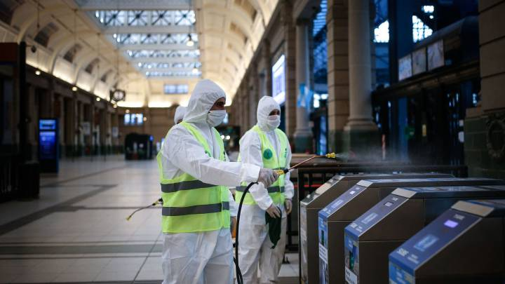

COVID-19

Desinfección

De qué manera lavarse las manos
¿Qué hacer?
COVID 19: 1030 Personas
recuperadas
Salud destacó el
número de las personas
recuperadas por coronavirus
en el país, que supera el
28% del total de infectados
por la enfermedad.
Ya que se transmite de persona a persona, es importante mantener distanciamiento social y un lavado de manos diario, si es que debes de salir de tu hogar constantemente, como por ejemplo, al trabajo.
Se recomienda no auto medicarse si se quiere tratar el COVID-19, ya que no está comprobado que alguna droga funcione contra el COVID-19.
Si uno presenta síntomas graves, lo recomendable es ir a hacerse un test, para comprobar si es que está infectado.
Si uno presenta síntomas leves y tiene un buen estado de salud general, se recomienda confinarse en casa.